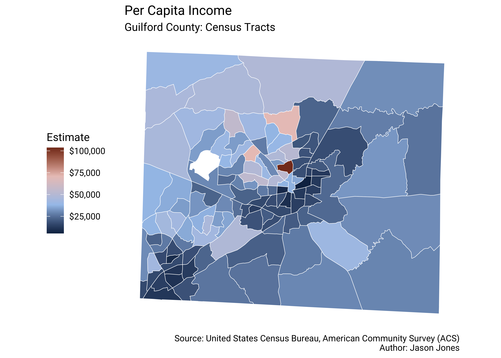
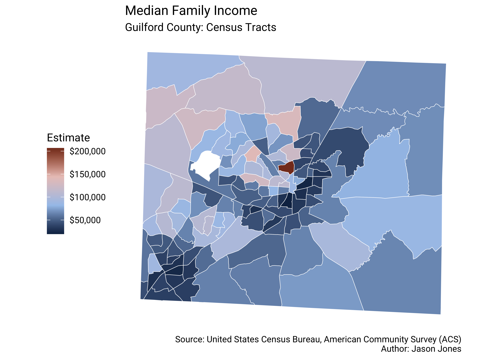
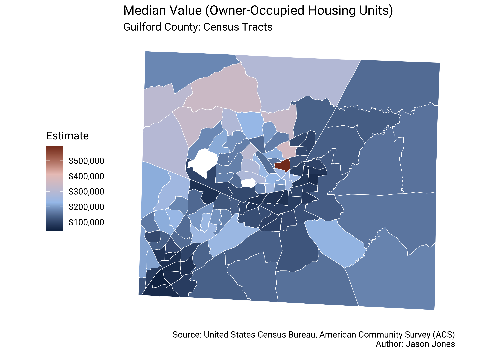

1 Per Capita Income
1.1 Variable Definition
1.2 Thematic Maps

2 Median Family Income
2.1 Variable Definition
2.2 Thematic Maps

3 Median Home Value
3.1 Variable Definition
3.2 Thematic Maps

4 Educational Attainment
4.1 Variable Definition
5 Notes on Methodology
5.1 Divergent Color Palette
For my thematic maps, I selected a diverging color palette to to bring attention to stark differences in low, medium, and high values. I am following best practice recommendations from The United States Census Bureau and have selected the applied colors based on their recommended diverging color palette. I am also trying to account for Web Content Accessibility Guidelines (WCAG) by meeting or exceeding the recommended color contrast ratio minimum. I believe the colors recommended by The Census Bureau meet these guidelines while also striking an acceptable balance with visual appeal. You can find more information online at The Census Bureau’s Data Visualization Standards repository (https://xdgov.github.io/data-design-standards/).